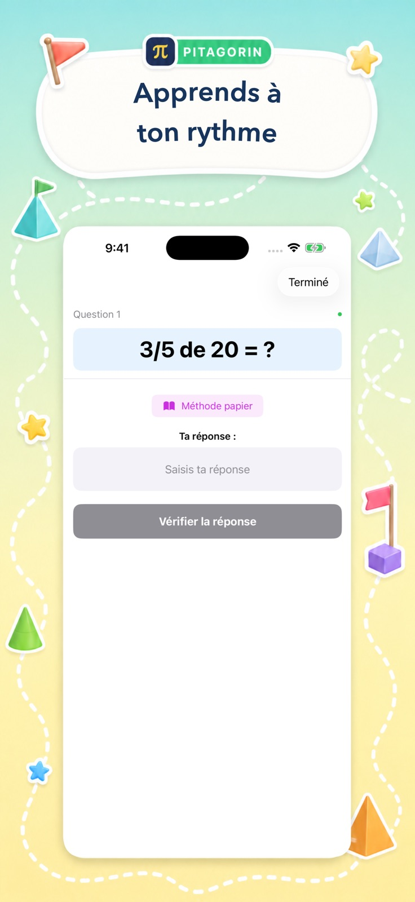

01
Commencer au bon niveau
Des opérations adaptées à l’âge et trois difficultés proposent un défi accessible.
Pour les enfants et les adultes à leurs côtés
Pitagorin aide les enfants de 5 à 13 ans à pratiquer seuls, choisir un défi adapté et ouvrir une explication visuelle lorsqu’ils en ont besoin.

Un équilibre réfléchi
Les enfants font des choix utiles sans devoir deviner la suite. Le but est une pratique intentionnelle, pas un temps d’écran sans fin.
Des opérations adaptées à l’âge et trois difficultés proposent un défi accessible.
Les méthodes posées expliquent retenues, emprunts, fractions, racines, priorités et autres bases.
Records, maîtrise des tables, historique de l’Académie et scores rendent les progrès visibles.
Ce que les enfants peuvent pratiquer
Ils peuvent suivre le sujet vu en classe ou leur curiosité.
Bon à savoir
Pitagorin est gratuite avec des fonctions Pro facultatives. Aucun compte n’est requis et les progrès restent sur l’appareil.
Ni nom, ni e-mail, ni profil ne sont demandés pour commencer.
Progrès, scores, maîtrise et photos facultatives restent sur l’appareil.
Texte agrandi, mode sombre, réduction des animations et descriptions VoiceOver sont pris en charge.
La politique concise explique publicité, analyse, achats et photos.
Pour tous les esprits
Ados et adultes peuvent aussi réviser les bases, renforcer le calcul mental ou garder l’esprit actif.